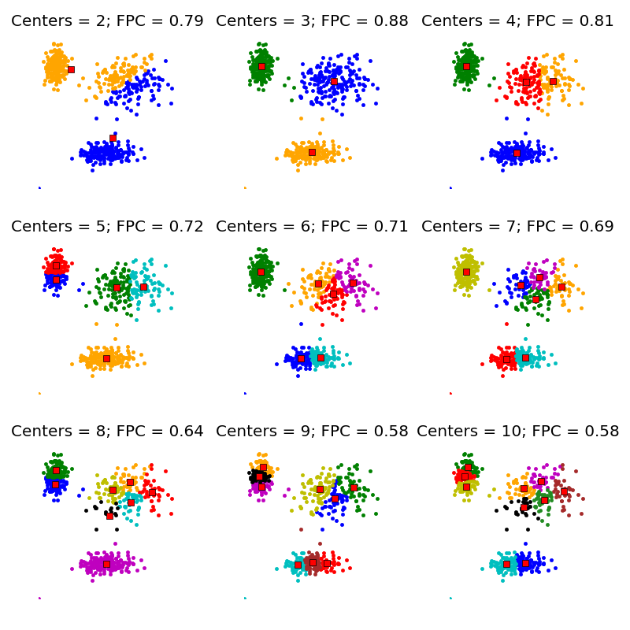

Regresi Linier Sederhana¶
Pengertian¶
Regresi Linear Sederhana adalah Metode Statistik yang berfungsi untuk menguji sejauh mana hubungan sebab akibat antara Variabel Faktor Penyebab (X) terhadap Variabel Akibatnya.
Model Persamaan Regresi Linear Sederhana adalah seperti berikut ini :
Y = a + bX¶
Dimana : Y = Variabel Response atau Variabel Akibat (Dependent) X = Variabel Predictor atau Variabel Faktor Penyebab (Independent) a = konstanta b = koefisien regresi (kemiringan); besaran Response yang ditimbulkan oleh Predictor.
Nilai-nilai a dan b dapat dihitung dengan menggunakan Rumus dibawah ini :
a = (Σy) (Σx²) – (Σx) (Σxy) n(Σx²) – (Σx)²
b = n(Σxy) – (Σx) (Σy) n(Σx²) – (Σx)²
Algoritma Regresi Linier Sederhana¶
Berikut ini adalah Langkah-langkah dalam melakukan Analisis Regresi Linear Sederhana :
- Tentukan Tujuan dari melakukan Analisis Regresi Linear Sederhana
- Identifikasikan Variabel Faktor Penyebab (Predictor) dan Variabel Akibat (Response)
- Lakukan Pengumpulan Data
- Hitung X², Y², XY dan total dari masing-masingnya
- Hitung a dan b berdasarkan rumus diatas.
- Buatkan Model Persamaan Regresi Linear Sederhana.
- Lakukan Prediksi atau Peramalan terhadap Variabel Faktor Penyebab atau Variabel Akibat.
Regresi Linier Berganda¶
Pengertian¶
Analisis regresi linier berganda adalah hubungan secara linear antara dua atau lebih variabel independen (X1, X2,….Xn) dengan variabel dependen (Y).
Model Persamaan Regresi Linear Sederhana adalah seperti berikut ini :
Y’ = a + b1X1+ b2X2+…..+ bnXn¶
Keterangan:
Y’ = Variabel dependen (nilai yang diprediksikan)
X1 dan X2 = Variabel independen
a = Konstanta (nilai Y’ apabila X1, X2…..Xn = 0)
b = Koefisien regresi (nilai peningkatan ataupun penurunan)
Contoh Kasus Dengan Penghitungan Manual¶
Seorang Engineer ingin mempelajari Hubungan antara Suhu Ruangan dengan Jumlah Cacat yang diakibatkannya, sehingga dapat memprediksi atau meramalkan jumlah cacat produksi jika suhu ruangan tersebut tidak terkendali. Engineer tersebut kemudian mengambil data selama 30 hari terhadap rata-rata (mean) suhu ruangan dan Jumlah Cacat Produksi.
Penyelesaiannya mengikuti Langkah-langkah dalam Analisis Regresi Linear Sederhana adalah sebagai berikut :
Langkah 1 : Penentuan Tujuan¶
Tujuan : Memprediksi Jumlah Cacat Produksi jika suhu ruangan tidak terkendali
Langkah 2 : Identifikasikan Variabel Penyebab dan Akibat¶
Varibel Faktor Penyebab (X) : Suhu Ruangan, Variabel Akibat (Y) : Jumlah Cacat Produksi
Langkah 3 : Pengumpulan Data¶
Berikut ini adalah data yang berhasil dikumpulkan selama 30 hari (berbentuk tabel) :
| Tanggal | Rata-rata Suhu Ruangan | Jumlah Cacat |
|---|---|---|
| 1 | 24 | 10 |
| 2 | 22 | 5 |
| 3 | 21 | 6 |
| 4 | 20 | 3 |
| 5 | 22 | 6 |
| 6 | 19 | 4 |
| 7 | 20 | 5 |
| 8 | 23 | 9 |
| 9 | 24 | 11 |
| 10 | 25 | 13 |
| 11 | 21 | 7 |
| 12 | 20 | 4 |
| 13 | 20 | 6 |
| 14 | 19 | 3 |
| 15 | 25 | 12 |
| 16 | 27 | 13 |
| 17 | 28 | 16 |
| 18 | 25 | 12 |
| 19 | 26 | 14 |
| 20 | 24 | 12 |
| 21 | 27 | 16 |
| 22 | 23 | 9 |
| 23 | 24 | 13 |
| 24 | 23 | 11 |
| 25 | 22 | 7 |
| 26 | 21 | 5 |
| 27 | 26 | 12 |
| 28 | 25 | 11 |
| 29 | 26 | 13 |
| 30 | 27 | 14 |
Langkah 4 : Hitung X², Y², XY dan total dari masing-masingnya¶
Berikut ini adalah tabel yang telah dilakukan perhitungan X², Y², XY dan totalnya :
| Tanggal | Rata-rata Suhu Ruangan | Jumlah Cacat | X2 | Y2 | XY |
|---|---|---|---|---|---|
| 1 | 24 | 10 | 576 | 100 | 240 |
| 2 | 22 | 5 | 484 | 25 | 110 |
| 3 | 21 | 6 | 441 | 36 | 126 |
| 4 | 20 | 3 | 400 | 9 | 60 |
| 5 | 22 | 6 | 484 | 36 | 132 |
| 6 | 19 | 4 | 361 | 16 | 76 |
| 7 | 20 | 5 | 400 | 25 | 100 |
| 8 | 23 | 9 | 529 | 81 | 207 |
| 9 | 24 | 11 | 576 | 121 | 264 |
| 10 | 25 | 13 | 625 | 169 | 325 |
| 11 | 21 | 7 | 441 | 49 | 147 |
| 12 | 20 | 4 | 400 | 16 | 80 |
| 13 | 20 | 6 | 400 | 36 | 120 |
| 14 | 19 | 3 | 361 | 9 | 57 |
| 15 | 25 | 12 | 625 | 144 | 300 |
| 16 | 27 | 13 | 729 | 169 | 351 |
| 17 | 28 | 16 | 784 | 256 | 448 |
| 18 | 25 | 12 | 625 | 144 | 300 |
| 19 | 26 | 14 | 676 | 196 | 364 |
| 20 | 24 | 12 | 576 | 144 | 288 |
| 21 | 27 | 16 | 729 | 256 | 432 |
| 22 | 23 | 9 | 529 | 81 | 207 |
| 23 | 24 | 13 | 576 | 169 | 312 |
| 24 | 23 | 11 | 529 | 121 | 253 |
| 25 | 22 | 7 | 484 | 49 | 154 |
| 26 | 21 | 5 | 441 | 25 | 105 |
| 27 | 26 | 12 | 676 | 144 | 312 |
| 28 | 25 | 11 | 625 | 121 | 275 |
| 29 | 26 | 13 | 676 | 169 | 338 |
| 30 | 27 | 14 | 729 | 196 | 378 |
Langkah 5 : Hitung a dan b berdasarkan rumus Regresi Linear Sederhana¶
Menghitung Konstanta (a) :
a = (Σy) (Σx²) – (Σx) (Σxy) n(Σx²) – (Σx)²
a = (282) (16.487) – (699) (6.861) 30 (16.487) – (699)²
a = -24,38
Menghitung Koefisien Regresi (b)
b = n(Σxy) – (Σx) (Σy) n(Σx²) – (Σx)²
b = 30 (6.861) – (699) (282) 30 (16.487) – (699)²
b = 1,45
Langkah 6 : Buat Model Persamaan Regresi¶
Y = a + bX Y = -24,38 + 1,45X
Langkah 7 : Lakukan Prediksi atau Peramalan terhadap Variabel Faktor Penyebab atau Variabel Akibat¶
I. Prediksikan Jumlah Cacat Produksi jika suhu dalam keadaan tinggi (Variabel X), contohnya : 30°C
Y = -24,38 + 1,45 (30) Y = 19,12
Jadi Jika Suhu ruangan mencapai 30°C, maka akan diprediksikan akan terdapat 19,12 unit cacat yang dihasilkan oleh produksi.
II. Jika Cacat Produksi (Variabel Y) yang ditargetkan hanya boleh 4 unit, maka berapakah suhu ruangan yang diperlukan untuk mencapai target tersebut ?
4 = -24,38 + 1,45X 1,45X = 4 + 24,38 X = 28,38 / 1,45 X = 19,57
Jadi Prediksi Suhu Ruangan yang paling sesuai untuk mencapai target Cacat Produksi adalah sekitar 19,57°C
Contoh Kasus Dengan Penghitungan Menggunakan Sklearn¶
from __future__ import division, print_function import numpy as np import matplotlib.pyplot as plt import skfuzzy as fuzz colors = ['b', 'orange', 'g', 'r', 'c', 'm', 'y', 'k', 'Brown', 'ForestGreen'] centers = [[4, 2], [1, 7], [5, 6]] sigmas = [[0.8, 0.3], [0.3, 0.5], [1.1, 0.7]] np.random.seed(42) xpts = np.zeros(1) ypts = np.zeros(1) labels = np.zeros(1) for i, ((xmu, ymu), (xsigma, ysigma)) in enumerate(zip(centers, sigmas)): xpts = np.hstack((xpts, np.random.standard_normal(200) * xsigma + xmu)) ypts = np.hstack((ypts, np.random.standard_normal(200) * ysigma + ymu)) labels = np.hstack((labels, np.ones(200) * i)) fig0, ax0 = plt.subplots() for label in range(3): ax0.plot(xpts[labels == label], ypts[labels == label], '.', color=colors[label]) ax0.set_title('Test data: 200 points x3 clusters.')

fig1, axes1 = plt.subplots(3, 3, figsize=(8, 8)) alldata = np.vstack((xpts, ypts)) fpcs = [] for ncenters, ax in enumerate(axes1.reshape(-1), 2): cntr, u, u0, d, jm, p, fpc = fuzz.cluster.cmeans( alldata, ncenters, 2, error=0.005, maxiter=1000, init=None) fpcs.append(fpc) cluster_membership = np.argmax(u, axis=0) for j in range(ncenters): ax.plot(xpts[cluster_membership == j], ypts[cluster_membership == j], '.', color=colors[j]) # Mark the center of each fuzzy cluster for pt in cntr: ax.plot(pt[0], pt[1], 'rs') ax.set_title('Centers = {0}; FPC = {1:.2f}'.format(ncenters, fpc)) ax.axis('off') fig1.tight_layout()

fig2, ax2 = plt.subplots() ax2.plot(np.r_[2:11], fpcs) ax2.set_xlabel("Number of centers") ax2.set_ylabel("Fuzzy partition coefficient")
cntr, u_orig, _, _, _, _, _ = fuzz.cluster.cmeans( alldata, 3, 2, error=0.005, maxiter=1000) # Show 3-cluster model fig2, ax2 = plt.subplots() ax2.set_title('Trained model') for j in range(3): ax2.plot(alldata[0, u_orig.argmax(axis=0) == j], alldata[1, u_orig.argmax(axis=0) == j], 'o', label='series ' + str(j)) ax2.legend()
newdata = np.random.uniform(0, 1, (1100, 2)) * 10 u, u0, d, jm, p, fpc = fuzz.cluster.cmeans_predict( newdata.T, cntr, 2, error=0.005, maxiter=1000) cluster_membership = np.argmax(u, axis=0) fig3, ax3 = plt.subplots() ax3.set_title('Random points classifed according to known centers') for j in range(3): ax3.plot(newdata[cluster_membership == j, 0], newdata[cluster_membership == j, 1], 'o', label='series ' + str(j)) ax3.legend() plt.show()